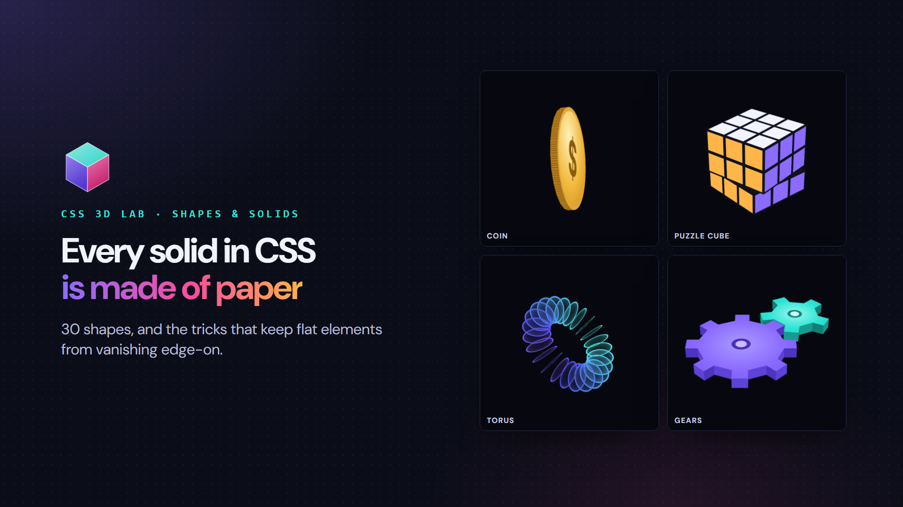

Four of CSS 3D Lab’s 30 shapes and solids: a coin, a puzzle cube, a torus and a pair of gears. Image and models: Edgaras Neverdauskas.

Four of CSS 3D Lab’s 30 shapes and solids: a coin, a puzzle cube, a torus and a pair of gears. Image and models: Edgaras Neverdauskas.The same coin at the same moment, exactly edge-on: without its rim it draws nothing; with it, a solid ridged edge.Almost edge-on, the 24 slats round the rim read as a solid, ridged edge.Each layer is one flat box with its nine stickers painted on, and the layers take turns twisting.Twenty-four circles, each turned to its angle and moved sideways, read together as a ring.Every straight edge of the outline has a standing strip, so the gears stay solid edge-on.